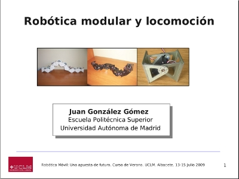

El 15 de Julio participé en el curso de verano: “Robótica Móvil: una apuesta de futuro” celebrado en el campus de Albacete de la Universidad de Castilla-La Mancha, organizado por Vicente Matellán e Ismael García.
Dí la charla “ Robótica modular y Locomoción” (Las transparencias y vídeos ya están publicados), de carácter divulgativo. En este tipo de conferencias intento explicar de una forma amena y divertida los robots modulares que hemos desarrollado y los algoritmos de locomoción que empleamos. Una parte muy importante de la charla son las demostraciones. Sin embargo, esta vez el “efecto demo” se cebó conmigo. Incompresiblemente, las dos placas que llevaba para mover los robots llegaron rotas. Siempre llevo todo por duplicado, para que no ocurran este tipo de cosas. Pero esta vez no tuvo solución y la audiencia se tuvo que conformar, muy a mi pesar, con las explicaciones y los vídeos.
Precisamente lo que más me gusta de la robótica es ver a los robots en movimiento y es algo que no se ve muy habitualmente en este tipo de cursos y en los congresos. Por eso yo siempre hago demos.
Al menos pudieron ver en acción la oruga de tres módulos, formada por la unión de 3 módulos Cube-M y que hace poco que la puse a funcionar en modo autónomo. También fue la primera charla en la que enseñé algunas de las piezas Impresas en nuestra Reprap. Entre ellas los módulos REPY-1.
Tengo que destacar la excelente organización de los cursos y felicitar a todos sus organizadores. La próxima vez os garantizo que veréis a todos los robots en macha 😉